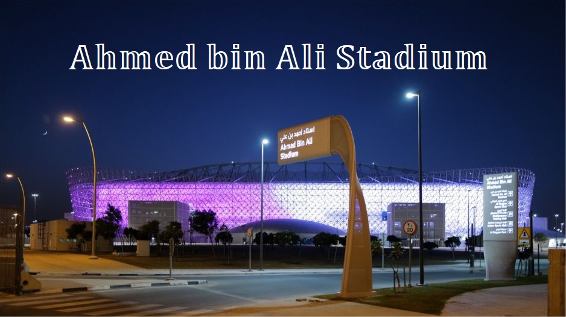

Rozpoczęcie mundialu:
Powrót
Miasto: Ar-Rajjan
Pojemność: 40.740
1/8 finału
Wybudowany w 2003 roku stadion mógł pomieścić 21.282 osób. Został zburzony w 2015 roku. Katarczycy przekonują, że 90 procent gruzu powstałego w wyniku rozbiórki stadionu, zostało ponownie wykorzystane do budowy nowego obiektu lub na publiczne projekty artystyczne. Inauguracja miała miejsce 18 grudnia 2020 roku. Był on współgospodarzem Klubowych Mistrzostw Świata. Po turnieju pojemność zmniejszy się do 21 tysięcy.
